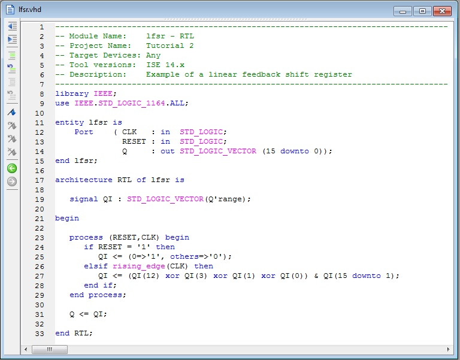

EEE6225 Systems Design
| Tutorial 2: Linear Feedback Shift Register |
| Creating the Design |
Once the project is open, select Project > New Source and create a new VHDL Module calling the file lfsr from the dialogue box. In the Define VHDL Source dialogue box set up two inputs called CLK and RESET plus an output called Q with MSB set to 15 and LSB set to 0 (this will give use a bus, a vector signal in VHDL, output with 16 lines). An editor will open to allow you to define the entity manually. When the editor opens you must edit the architecture to match Figure 1 (note even the architecture name has changed to rtl and the architecture end statement repeats that new name). |
|  Figure 1. RTL description of LFSR |
Save the file as LFSR.vhd and exit. Now, with this new VHDL file selected, use the Synthesize option Check Syntax to make sure the VHDL code is valid. If this operation fails with errors you will need to correct them before continuing. EXERCISE: Find out about the use of Linear Feedback Shift Registers to generate Pseudo-Random Binary sequence - or maximal-length sequences - and see if you can understand what the VHDL above is doing. |
| Continue on to Creating a testbench |